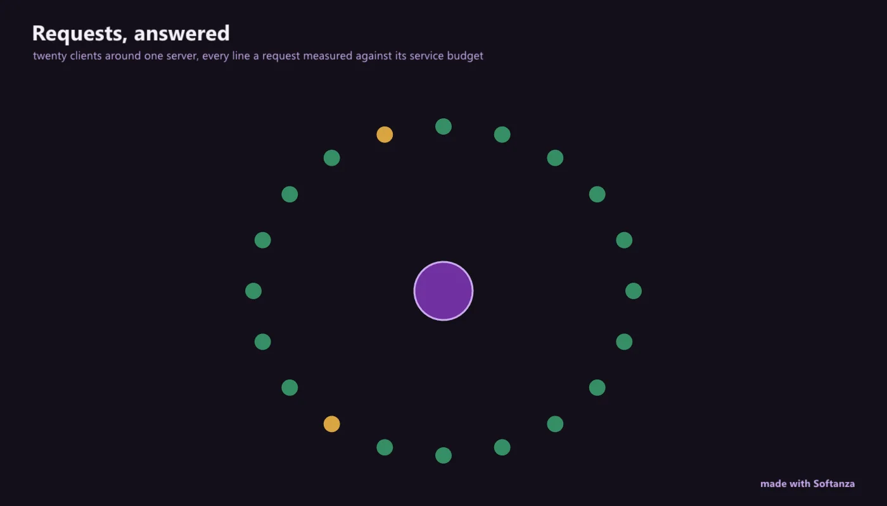

Web et serveur d'applications
Un serveur HTTP compétent, avec un contrat de service intégré, l'authentification et un fournisseur d'identité, et un plan de virtualisation de services qui refuse les faux.
4 Strong · 5 Solid · 2 Partial · 1 Emerging
Mesuré contre : Express · FastAPI · WireMock · Dossiers : base/appserver(s'ouvre dans un nouvel onglet) · base/service(s'ouvre dans un nouvel onglet) · Le guide des fonctions de ce domaine

Repensé depuis les premiers principes
Ce que Softanza a gardé de ce qui marche, et ce qu'elle a repensé, tel que la bibliothèque l'a écrit dans ses documents de conception et ses narrations.
La manière SoftanzaLe serveur est un hôte, pas une bibliothèque appelée à chaque requête : le moteur est déjà chargé et prêt, et le serveur ne fait qu'y amener les requêtes et en rapporter les résultats.
Gardé des meilleures pratiques
- Le routage reste simple : une table méthode, chemin, gestionnaire, avec des paramètres comme /user/:id et un joker final. Les routes exactes passent en premier. source(s'ouvre dans un nouvel onglet)
- La connexion suit les standards publiés : OpenID Connect, clés d'accès, SAML, codes à usage unique. Le jeton change dès que la session gagne des droits, contre la fixation de session. source(s'ouvre dans un nouvel onglet)
- Un back-end de données, c'est du REST sur la base SQLite intégrée : Expose(db, table) fournit lister, lire, créer, modifier, supprimer, à l'abri des injections, avec de vrais 404. source(s'ouvre dans un nouvel onglet)
Repensé
- Le moteur est résident : aucun démarrage à froid, donc nulle grappe pour rester « chaud ». Les workers ne servent qu'à la concurrence et à l'isolement de charge. source(s'ouvre dans un nouvel onglet)
- Un hôte, quatre formes : routes web, back-end de données, flux bruts d'objets connectés et agents hébergés. Les agents partagent la boucle d'événements du serveur, sans runtime séparé. source(s'ouvre dans un nouvel onglet)
- Une connexion ne pose pas un drapeau et ne renvoie pas un simple rôle : elle produit un acteur, avec capacités et niveau de confiance, que tout le programme comprend. source(s'ouvre dans un nouvel onglet)
- On code toute l'application contre des bacs à sable fidèles, puis on passe aux vrais services au déploiement. Le registre interdit un bac à sable en production. source(s'ouvre dans un nouvel onglet)
Two things live here, and the distinctive one isn't the web server. The HTTP server is real and competent -- reactor-driven HTTP/1.1, Express-like routing, built-in HTTPS/mTLS, auto-CRUD sqlite, and ahead of Express and FastAPI a built-in per-request SLA bracket plus an auth router that is also an OIDC provider -- but middleware is registered-but-never-invoked, with no JSON body parsing, streaming or WebSocket. The standout is the service-virtualization plane: stateful doubles under a governance gate where Deploy(:Production) structurally refuses a fake dependency, even for a fully-entitled human.
Ce qu'un maker en fait, et ce qui se distingue
- A built-in per-request SLA bracket with Prometheus /metrics and distributed tracing, ahead of Express and FastAPI
- A mounted auth router that is also an OIDC provider (discovery, JWKS, authorize, PKCE token)
- Stateful service doubles that enforce the real service's rules -- WireMock-and-beyond
- Deploy(:Production) structurally refuses a fake dependency, even for a fully-entitled human
Ce qui est dû
- Execute the middleware pipeline (registered but never invoked)
- JSON request bodies and streaming responses
- Serve static files; WebSocket serving; latency injection and a status-aware live adapter in the sandbox
- OpenAPI/schema and content negotiation; server-side HTTP/2; deeper MBaaS
La manière Softanza, exécutée
Ce que Softanza fait autrement dans ce domaine, montré par du code tiré de ses narrations et de ses gardes, et exécuté pour cette page.
Une connexion renvoie un acteur doté de capacités et d'un niveau de confiance, pas un rôle en texte.
NOW = 1700000000 # a fixed clock, as in the guard
a = new stzAuth()
a.Register("dana", "pw")
a.GrantRole("dana", "admin")
tok = a.LoginAt("dana", "pw", NOW)
act = a.ActorOfAt(tok, NOW)
? "user : " + act.Name()
? "capabilities: " + @@(act.Kinds())
? "posture : " + act.Posture()user : dana capabilities: [ "effectful", "compute", "sensing" ] posture : trusted
exécuté le 2026-10-01 21:18 dans la bibliothèque au commit 0e72e2e2c ; tiré de base/doc/narrations/stz-auth-the-front-door-narration.md(s'ouvre dans un nouvel onglet)
Le bac à sable du fournisseur d'identité détient une vraie clé et sait émettre un jeton falsifié : le refus se teste avant tout vrai fournisseur.
NOW = 1700000000 # a fixed clock, as in the guard
idp = new stzOidcSandbox("https://idp.local", "my-app")
rp = new stzOidcClient("https://idp.local", "my-app")
rp.SetJwks( idp.JwksJson() ) # the provider's public keys
b = new stzAuth()
b.SetOidcClient(rp)
? "forged token : [" + b.LoginWithOidcAt(idp.IssueForgedIdTokenAt("dana","n-1",NOW), "n-1", NOW) + "]"
? " why : " + b.OidcWhy()forged token : [] why : the signature does not verify against the provider's key
exécuté le 2026-10-01 21:18 dans la bibliothèque au commit 0e72e2e2c ; tiré de base/doc/narrations/stz-auth-the-front-door-narration.md(s'ouvre dans un nouvel onglet)
Les couloirs, un par un
Les couloirs et leurs notes sont cités tels qu'ils ont été lus à la source, le Read from the source on 2026-09-16, from a read-only main worktree.